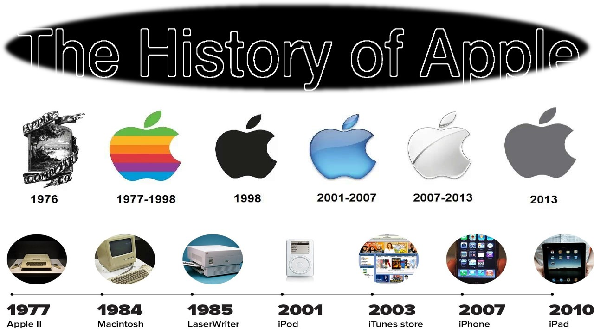
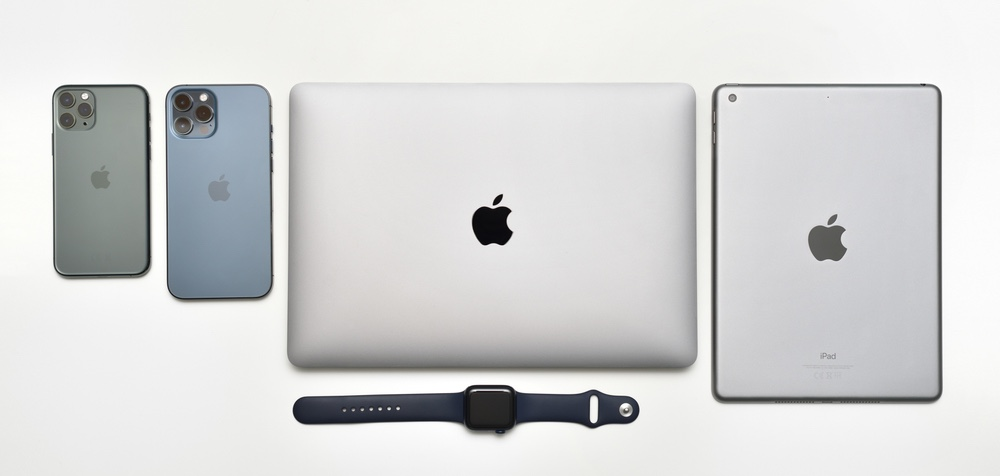

Head info
Apple Inc. is an American multinational corporation and
technology company headquartered and incorporated in Cupertino, California, in Silicon Valley. It is
best known for its consumer electronics, software, and services. Founded in 1976 as Apple Computer
Company by Steve Jobs, Steve Wozniak and Ronald Wayne, the company was incorporated by Jobs and
Wozniak as Apple Computer, Inc. the following year. It was renamed Apple Inc. in 2007 as the company
had expanded its focus from computers to consumer electronics. Apple is the largest technology
company by revenue, with US$391.04 billion in FY 2024.
The company was founded to produce and market Wozniak's Apple I personal computer. Its second
computer, the Apple II, became a best seller as one of the first mass-produced microcomputers. Apple
introduced the Lisa in 1983 and the Macintosh in 1984, as some of the first computers to use a
graphical user interface and a mouse. By 1985, internal company problems led to Jobs leaving to form
NeXT, Inc., and Wozniak withdrawing to other ventures; John Sculley served as long-time CEO for over
a decade. In the 1990s, Apple lost considerable market share in the personal computer industry to
the lower-priced Wintel duopoly of the Microsoft Windows operating system on Intel-powered PC
clones. In 1997, Apple was weeks away from bankruptcy. To resolve its failed operating system
strategy, it bought NeXT, effectively bringing Jobs back to the company, who guided Apple back to
profitability over the next decade with the introductions of the iMac, iPod, iPhone, and iPad
devices to critical acclaim as well as the iTunes Store, launching the "Think different" advertising
campaign, and opening the Apple Store retail chain. These moves elevated Apple to consistently be
one of the world's most valuable brands since about 2010. Jobs resigned in 2011 for health reasons,
and died two months later; he was succeeded as CEO by Tim Cook.
Apple's current product lineup includes portable and home hardware such as the iPhone, iPad, Apple
Watch, Mac, and Apple TV; operating systems such as iOS, iPadOS, and macOS; and various software and
services including Apple Pay, iCloud, and multimedia streaming services like Apple Music and Apple
TV+. Apple is one of the Big Five American information technology companies; for the most part
since 2011, Apple has been the world's largest company by market capitalization, and, as of 2023,
is the largest manufacturing company by revenue, the fourth-largest personal computer vendor by unit
sales, the largest vendor of tablet computers, and the largest vendor of mobile phones in the world.
Apple became the first publicly traded U.S. company to be valued at over $1 trillion in 2018, and,
as of June 2024, is valued at just over $3.2 trillion.
Apple has received criticism regarding its contractors' labor practices, its relationship with trade
unions, its environmental practices, and its business ethics, including anti-competitive practices
and materials sourcing. Nevertheless, the company has a large following and enjoys a high level of
brand loyalty.
History

1976–1980: Founding and incorporation:
Apple Computer Company was founded on April 1, 1976, by Steve Jobs, Steve Wozniak, and Ronald
Wayne as a partnership. The company's first product is the Apple I, a computer designed
and hand-built entirely by Wozniak. To finance its creation, Jobs sold his Volkswagen Bus,
and Wozniak sold his HP-65 calculator. Neither received the full selling price but in
total earned $1,300 (equivalent to $7,000 in 2023). Wozniak debuted the first prototype Apple I
at the Homebrew Computer Club in July 1976. The Apple I was sold as a motherboard with CPU,
RAM, and basic textual-video chips—a base kit concept which was not yet marketed as a complete
personal computer. It was priced soon after debut for $666.66 (equivalent to $3,600 in
2023). Wozniak later said he was unaware of the coincidental mark of the beast in
the number 666, and that he came up with the price because he liked "repeating digits".
Apple Computer, Inc. was incorporated in Cupertino, California, on January 3, 1977,
without Wayne, who had left and sold his share of the company back to Jobs and Wozniak for $800
only twelve days after having co-founded it. Multimillionaire Mike Markkula provided
essential business expertise and funding of $250,000 (equivalent to $1,257,000 in 2023) to Jobs
and Wozniak during the incorporation of Apple. During the first five years of operations,
revenues grew exponentially, doubling about every four months. Between September 1977 and
September 1980, yearly sales grew from $775,000 to US$118 million, an average annual growth rate
of 533%.
The Apple II, also designed by Wozniak, was introduced on April 16, 1977, at the first West
Coast Computer Faire. It differs from its major rivals, the TRS-80 and Commodore PET,
because of its character cell-based color graphics and open architecture. The Apple I and early
Apple II models use ordinary audio cassette tapes as storage devices, which were superseded by
the 5+1⁄4-inch floppy disk drive and interface called the Disk II in 1978.
The Apple II, introduced in 1977 and designed primarily by Wozniak, was the company's first
major success.
The Apple II was chosen to be the desktop platform for the first killer application of the
business world: VisiCalc, a spreadsheet program released in 1979. VisiCalc created a
business market for the Apple II and gave home users an additional reason to buy an Apple II:
compatibility with the office, but Apple II market share remained behind home computers made
by competitors such as Atari, Commodore, and Tandy.
On December 12, 1980, Apple (ticker symbol "AAPL") went public selling 4.6 million shares at $22
per share ($.10 per share when adjusting for stock splits as of September 3, 2022),
generating over $100 million, which was more capital than any IPO since Ford Motor Company in
1956. By the end of the day, around 300 millionaires were created, including Jobs and
Wozniak, from a stock price of $29 per share and a market cap of $1.778 billion.
2011–present: Post-Jobs era, Tim Cook
On October 5, 2011, Steve Jobs died, marking the end of an era for Apple. The next major
product announcement by Apple was on January 19, 2012, when Apple's Phil Schiller introduced
iBooks Textbooks for iOS and iBook Author for Mac OS X in New York City.Jobs stated in the
biography Steve Jobs that he wanted to reinvent the textbook industry and education.
From 2011 to 2012, Apple released the iPhone 4s and iPhone 5, which featured improved
cameras, an intelligent software assistant named Siri, and cloud-synced data with iCloud; the
third- and fourth-generation iPads, which featured Retina displays; and the iPad Mini,
which featured a 7.9-inch screen in contrast to the iPad's 9.7-inch screen. These launches
were successful, with the iPhone 5 (released September 21, 2012) becoming Apple's biggest iPhone
launch with over two million pre-orders and sales of three million iPads in three days
following the launch of the iPad Mini and fourth-generation iPad (released November 3,
2012). Apple also released a third-generation 13-inch MacBook Pro with a Retina display and
new iMac and Mac Mini computers.
On August 20, 2012, Apple's rising stock price increased the company's market capitalization to
a then-record $624 billion. This beat the non-inflation-adjusted record for market
capitalization previously set by Microsoft in 1999. On August 24, 2012, a US jury ruled
that Samsung should pay Apple $1.05 billion (£665m) in damages in an intellectual property
lawsuit. Samsung appealed the damages award, which was reduced by $450 million and
further granted Samsung's request for a new trial. On November 10, 2012, Apple confirmed a
global settlement that dismissed all existing lawsuits between Apple and HTC up to that date, in
favor of a ten-year license agreement for current and future patents between the two
companies. It is predicted that Apple will make US$280 million per year from this deal with
HTC.
In May 2014, Apple confirmed its intent to acquire Dr. Dre and Jimmy Iovine's audio company
Beats Electronics—producer of the "Beats by Dr. Dre" line of headphones and speaker products,
and operator of the music streaming service Beats Music—for US$3 billion, and to sell their
products through Apple's retail outlets and resellers. Iovine believed that Beats had always
"belonged" with Apple, as the company modeled itself after Apple's "unmatched ability to marry
culture and technology". The acquisition was the largest purchase in Apple's history.
First-generation Apple Watch (2015)
During a press event on September 9, 2014, Apple introduced a smartwatch called the Apple
Watch. Initially, Apple marketed the device as a fashion accessory and a complement to
the iPhone, that would allow people to look at their smartphones less. Over time, the
company has focused on developing health and fitness-oriented features on the watch, in an
effort to compete with dedicated activity trackers. In January 2016, Apple announced that over
one billion Apple devices were in active use worldwide.
On June 6, 2016, Fortune released Fortune 500, its list of companies ranked on revenue
generation. In the trailing fiscal year of 2015, Apple was listed as the top tech company.
It ranked third, overall, with US$233 billion in revenue. This represents a movement upward
of two spots from the previous year's list.
In June 2017, Apple announced the HomePod, its smart speaker aimed to compete against Sonos,
Google Home, and Amazon Echo. Toward the end of the year, TechCrunch reported that Apple
was acquiring Shazam, a company that introduced its products at WWDC and specializing in music,
TV, film and advertising recognition. The acquisition was confirmed a few days later,
reportedly costing Apple US$400 million, with media reports that the purchase looked like a move
to acquire data and tools bolstering the Apple Music streaming service. The purchase was
approved by the European Union in September 2018.
Also in June 2017, Apple appointed Jamie Erlicht and Zack Van Amburg to head the newly formed
worldwide video unit. In November 2017, Apple announced it was branching out into original
scripted programming: a drama series starring Jennifer Aniston and Reese Witherspoon, and a
reboot of the anthology series Amazing Stories with Steven Spielberg. In June 2018, Apple
signed the Writers Guild of America's minimum basic agreement and Oprah Winfrey to a multi-year
content partnership. Additional partnerships for original series include Sesame Workshop
and DHX Media and its subsidiary Peanuts Worldwide, and a partnership with A24 to create
original films.
During the Apple Special Event in September 2017, the AirPower wireless charger was announced
alongside the iPhone X, iPhone 8, and Watch Series 3. The AirPower was intended to wirelessly
charge multiple devices, simultaneously. Though initially set to release in early 2018, the
AirPower would be canceled in March 2019, marking the first cancellation of a device under
Cook's leadership. On August 19, 2020, Apple's share price briefly topped $467.77, making
it the first US company with a market capitalization of US$2 trillion.
MacBook Air M1 (2020), Apple's first notebook computer following the switch from Intel x86 to
ARM processors
During its annual WWDC keynote speech on June 22, 2020, Apple announced it would move away from
Intel processors, and the Mac would transition to processors developed in-house. The
announcement was expected by industry analysts, and it has been noted that Macs featuring
Apple's processors would allow for big increases in performance over current Intel-based
models. On November 10, 2020, the MacBook Air, MacBook Pro, and the Mac Mini became the
first Macs powered by an Apple-designed processor, the Apple M1.
In April 2022, it was reported that Samsung Electro-Mechanics would be collaborating with Apple
on its M2 chip instead of LG Innotek. Developer logs showed that at least nine Mac models
with four different M2 chips were being tested.
The Wall Street Journal reported that Apple's effort to develop its own chips left it better
prepared to deal with the semiconductor shortage that emerged during the COVID-19 pandemic,
which led to increased profitability, with sales of M1-based Mac computers rising sharply in
2020 and 2021. It also inspired other companies like Tesla, Amazon, and Meta Platforms to pursue
a similar path.
In April 2022, Apple opened an online store that allowed anyone in the U.S. to view repair
manuals and order replacement parts for specific recent iPhones, although the difference in cost
between this method and official repair is anticipated to be minimal.
In May 2022, a trademark was filed for RealityOS, an operating system reportedly intended for
virtual and augmented reality headsets, first mentioned in 2017. According to Bloomberg, the
headset may come out in 2023. Further insider reports state that the device uses iris
scanning for payment confirmation and signing into accounts.
On June 18, 2022, the Apple Store in Towson, Maryland, became the first to unionize in the U.S.,
with the employees voting to join the International Association of Machinists and Aerospace
Workers.
On July 7, 2022, Apple added Lockdown Mode to macOS 13 and iOS 16, as a response to the earlier
Pegasus revelations; the mode increases security protections for high-risk users against
targeted zero-day malware.
Apple launched a buy now, pay later service called 'Apple Pay Later' for its Apple Wallet users
in March 2023. The program allows its users to apply for loans between $50 and $1,000 to make
online or in-app purchases and then repaying them through four installments spread over six
weeks without any interest or fees.
In November 2023, Apple agreed to a $25 million settlement in a U.S. Department of Justice case
that alleged Apple was discriminating against U.S. citizens in hiring. Apple created jobs that
were not listed online and required paper submission to apply for, while advertising these jobs
to foreign workers as part of recruitment for PERM.
In January 2024, Apple announced compliance with the European Union's competition law, with
major changes to the App Store and other services, effective on March 7. This enables iOS users
in the 27-nation bloc to use alternative app stores, and alternative payment methods within
apps. This adds a menu in Safari for downloading alternative browsers, such as Chrome or
Firefox.
In June 2024, Apple introduced Apple Intelligence to incorporate on-device artificial
intelligence capabilities.
On November 1, 2024, Apple announced its acquisition of Pixelmator, a company known for its
image editing applications for iPhone and Mac. Apple had previously showcased Pixelmator's apps
during its product launches, including naming Pixelmator Pro its Mac App of the Year in 2018 for
its innovative use of machine learning and AI. In the announcement, Pixelmator stated that there
would be no significant changes to its existing apps following the acquisition.
Dvices

Since the company's founding and into the early 2000s, Apple primarily sold computers, which
are marketed as Macintosh since the mid-1980s. Since then, the company has expanded its
product categories to include various portable devices, starting with the now discontinued
iPod (2001), and later with the iPhone (2007) and iPad (2010). Apple also sells several
other products that it categorizes as "Wearables, Home and Accessories", such as the Apple
Watch, Apple TV, AirPods, HomePod, and Vision Pro. Apple devices have been praised for
creating a cohesive ecosystem when used in conjunction with other Apple products.
As of 2023, there are over 2 billion Apple devices in active use worldwide.
Mac
Main article: Mac (computer)
A MacBook Air, in midnight color, on a wooden desk.
MacBook Air with M2 chip
An thin iMac in blue color on a desk.
iMac with M1 chip
Mac, which is short for Macintosh—its official name until 1999—is Apple's line of personal
computers that use the company's proprietary macOS operating system. Personal computers were
Apple's original business line, but as of the end of 2024 they account for only about eight
percent of the company's revenue.
There are six Mac computer families in production:
iMac: Consumer all-in-one desktop computer, introduced in 1998.
Mac Mini: Consumer sub-desktop computer, introduced in 2005.
MacBook Pro: Professional notebook, introduced in 2006.
Mac Pro: Professional workstation, introduced in 2006.
MacBook Air: Consumer ultra-thin notebook, introduced in 2008.
Mac Studio: Professional small form-factor workstation, introduced in 2022.
Often described as a walled garden, Macs use Apple silicon chips, run the macOS operating
system, and include Apple software like the Safari web browser, iMovie for home movie
editing, GarageBand for music creation, and the iWork productivity suite. Apple also sells
pro apps: Final Cut Pro for video production, Logic Pro for musicians and producers, and
Xcode for software developers. Apple also sells a variety of accessories for Macs, including
the Pro Display XDR, Apple Studio Display, Magic Mouse, Magic Trackpad, and Magic Keyboard.
iPhone
Main article: iPhone
iPhone 15 (left) and iPhone 15 Pro (right)
The iPhone is Apple's line of smartphones, which run the iOS operating system. The first
iPhone was unveiled by Steve Jobs on January 9, 2007. Since then, new iPhone models have
been released every year. When it was introduced, its multi-touch screen was described as
"revolutionary" and a "game-changer" for the mobile phone industry. The device has been
credited with creating the app economy.
iOS is one of the two major smartphone platforms in the world, alongside Android. The iPhone
has generated large profits for the company, and is credited with helping to make Apple one
of the world's most valuable publicly traded companies. As of the end of 2024, the
iPhone accounts for nearly half of the company's revenue.
iPad
Main article: iPad
The iPad is Apple's line of tablets which run iPadOS. The first-generation iPad was
announced on January 27, 2010. The iPad is mainly marketed for consuming multimedia,
creating art, working on documents, videoconferencing, and playing games. The iPad lineup
consists of several base iPad models, and the smaller iPad Mini, upgraded iPad Air, and
high-end iPad Pro. Apple has consistently improved the iPad's performance, with the iPad Pro
adopting the same M1 and M2 chips as the Mac; but the iPad still receives criticism for its
limited OS.
As of September 2020, Apple has sold more than 500 million iPads, though sales peaked in
2013. The iPad still remains the most popular tablet computer by sales as of the second
quarter of 2020, and accounted for seven percent of the company's revenue as of the end
of 2024. Apple sells several iPad accessories, including the Apple Pencil, Smart
Keyboard, Smart Keyboard Folio, Magic Keyboard, and several adapters.